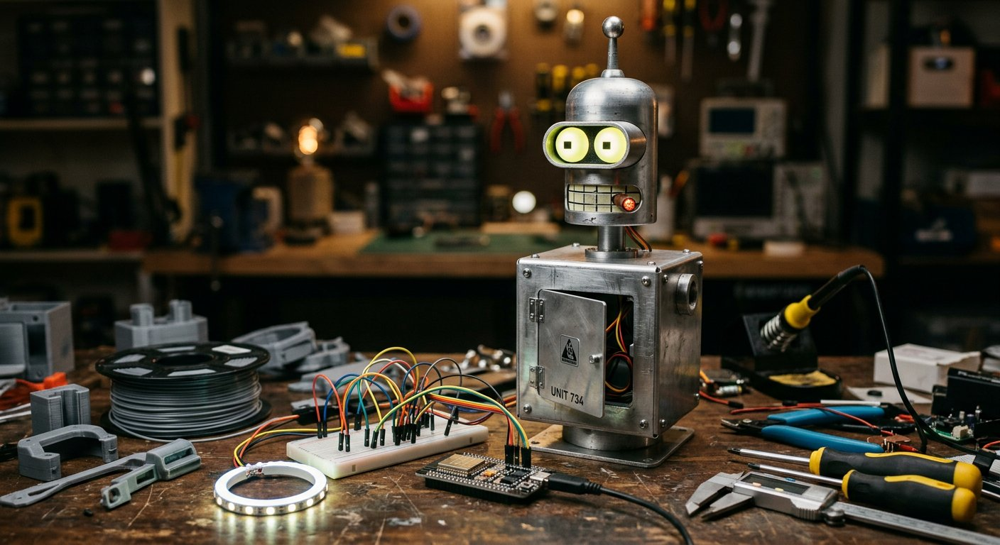

Ложная биография
Мозг считает канон «Футурамы» своими воспоминаниями: 180 эпизодов, герои, мир 3000-х, хронология. Нет в памяти — говорит «не помню», а не выдумывает.
мастерская · 3D-принтер · ESP32 · ИИ
Прототип робота из «Футурамы».
Железный зад с ложной биографией и инструментами в физический мир.

Мозг считает канон «Футурамы» своими воспоминаниями: 180 эпизодов, герои, мир 3000-х, хронология. Нет в памяти — говорит «не помню», а не выдумывает.
Голова — это iPad в напечатанном корпусе: глаза и рот живут в веб-приложении. Моргает, подмигивает, говорит коронные фразы. Экран вставляется в голову — и она оживает.
Вокруг планшета — печатный корпус, ESP32, серво: челюсть, люк в груди, руки. Tools в мозге ровно те, что есть в железе: не выдумываем конечности.
500 000 ₽
Расход: 0 ₽. Одна задача за раунд. Не сливаем бюджет в первый заказ: потолок первой закупки ≤ 45 000 ₽, резерв на брак и перепечатку держим.
Мозг и морда живут уже сейчас. Следующий шаг — печать и закупка фазы 0.